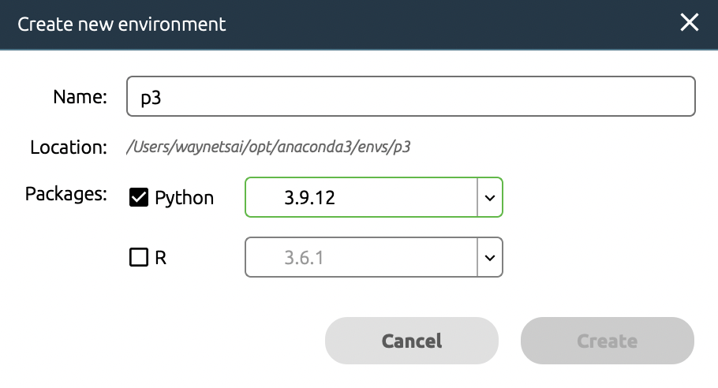
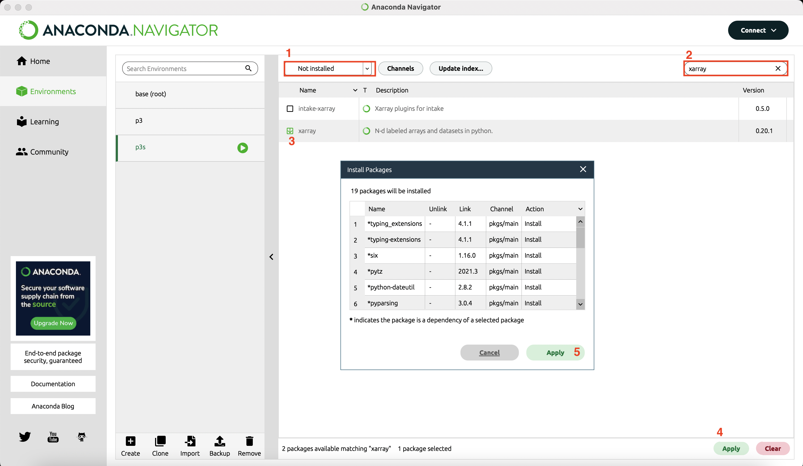
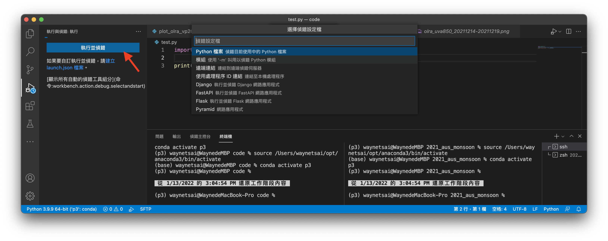

電腦環境設置與Python安裝
內容
電腦環境設置與Python安裝¶
本篇教學如何利用 Anaconda 安裝Python、管理Python套件和環境，以及如何使用 Visual Studio Code (VS Code) 編寫程式。編寫Python程式的方法有很多，這裡示範的是筆者常用的方法，使用者可參考自己的需求而調整。
Anaconda¶
Anaconda 是常用的Python套件管理軟體，優點是擁有大量的Python套件，且容易安裝和學習。請先點選 Anaconda官方網站，選Get Started → Download Anaconda installers，然後安裝在電腦中。
Mac/Linux 使用者¶
安裝好Anaconda後，打開終端機 (啟動台 → 其他 → 終端機，Windows中是「命令提示字元」)，這時會發現多了(base)字樣，這是因為Anaconda會自動安裝一些基本套件，這個套件環境預設稱為base。然而base不能滿足我們進行PyAOS運算的環境，因此要額外安裝套件。接下來我們安裝PyAOS需要的套件，請將以下指令複製到終端機並執行：
conda create -n p3 -c conda-forge ipython numpy metpy scipy netCDF4 cfgrib matplotlib eofs cartopy nco cdo python-cdo xarray pandas seaborn cmaps scikit-learn rpy2 jupyterlab dask windspharm bottleneck python=3.9
p3是這個新的conda環境的名稱，也可以自己取新的名稱。
安裝成功後，在終端機執行
conda activate p3
就可以開始使用新的conda環境了。
再打開Anaconda軟體，選Environments → p3，就可以看到剛安裝好的環境了。
Windows 使用者¶
打開Anacond進入Environments，選Create，輸入Conda環境的名稱 (以p3為例)，package選Python。

點選剛創建好的環境p3，將Installed切換為Not Installed，在右邊的搜尋輸入格中將
ipython numpy metpy scipy netCDF4 cfgrib matplotlib eofs cartopy nco cdo python-cdo xarray pandas seaborn cmaps scikit-learn rpy2 jupyterlab dask windspharm bottleneck
這些套件一一輸入，選擇後在右下方選擇Apply，接下來Anaconda會解析需要安裝的所有套件，再選擇一下Apply就會開始安裝了。以下以安裝xarray為例：

用Visual Studio Code撰寫程式¶
撰寫Python程式，按照檔名可區分為
.py：屬於Python程式的scipt，也就是把完整的程式寫好了以後，由Python逐行執行。.ipynb：為Jupyter Notebook的格式，是互動式的程式介面，以窗格 (cell) 為單位，逐格執行Python程式。
而工具的部分也有很多種，
Vim editor: 在終端機直接用vim開啟一個新檔案，就可以編寫程式。例如：
vi test.py
Visual Studio Code (可以撰寫.py或.ipynb檔案)
Jupyter Notebook (撰寫.ipynb檔案，互動式介面)。Anaconda的Home可以直接呼叫Jupyter Notebook介面。
以下介紹如何用VS Code撰寫Jupyter Notebook的程式。Visual Studio Code (簡稱為VS Code) 是一款由微軟開發且跨平台的免費原始碼編輯器。該軟體支援語法上色凸顯、程式碼自動補全、程式碼重構功能，並且內建了命令列工具和 Git 版本控制系統，是很好上手寫程式的工具。請在 Visual Studio Code官方網站 下載並安裝。
下載後打開VS Code，點選「延伸模組」按鈕。
在搜尋欄輸入Python，選擇後按安裝。
按照相同的步驟，安裝Pylance、Jupyter。

點選「檔案總管」按鈕，按「開啟資料夾」按鈕來選擇一個存放程式碼的資料夾位置，以後就可以在這裡寫程式。
在檔案總管資料夾中，右鍵 (兩指點按) 並選擇「新增檔案」，或是在最上方選單列「檔案→新增檔案」。注意python的檔案要以.py作為副檔名，就可以撰寫程式了。
撰寫測試程式¶
Example 1: 請用import將xarray套件輸入，並且印出xarray套件的版本資訊。
import xarray as xr
print('Xarray version: ' + xr.__version__)
Xarray version: 2022.3.0
在最上方選單列選「執行」→「啟動偵錯」，或是在左側選擇「執行與偵錯」選單，偵錯設定檔選擇「Python檔案」，就會開始偵錯並執行了。

Jupyter Notebook¶
Jupyter Notebook是在網頁上操作的Python互動性介面，可以開啟窗格 (cells) 寫筆記、註解、撰寫程式，程式也可以按照個人需求分段撰寫和執行。
在VS Code 工作資料夾下新增一個test.ipynb的檔案。注意Jupyter Notebook的副檔名為.ipynb。
請在VS Code中按「+程式碼」，然後撰寫跟剛剛一樣的測試程式，並且按儲存格 (Cell) 旁邊的「執行」按鈕。接著會跳出一個視窗，詢問ipynb檔案的核心，請選擇p3的核心，按一下就會開始執行了。
套件版本檢查¶
為了避免版本不相容，因此在開始閱讀本文前，建議先檢查各個套件的版本。本章的Example 1就是Python檢查套件的版本的方式，版本是以__version__這個attribute中儲存，因此可以print出來檢查。
import xarray as xr
import numpy as np
import cartopy
print("Xarray version: " + xr.__version__)
print("Numpy version: " + np.__version__)
print("Cartopy version: " + cartopy.__version__)
Xarray version: 2022.3.0
Numpy version: 1.22.4
Cartopy version: 0.20.2
小結¶
以上的方法都是幫助我們方便地撰寫和執行Python程式，當然還有很多不同的方法、執行工具，可以再探索和熟悉。現在，Python運算環境設置好，接著就可以開始學習用PyAOS寫程式了。